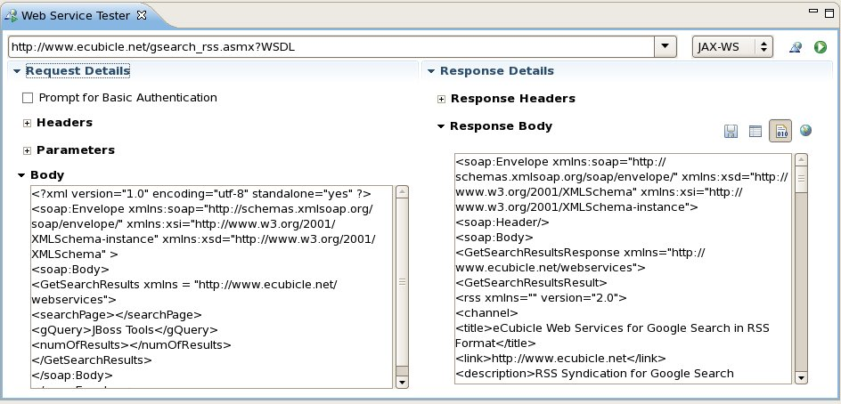
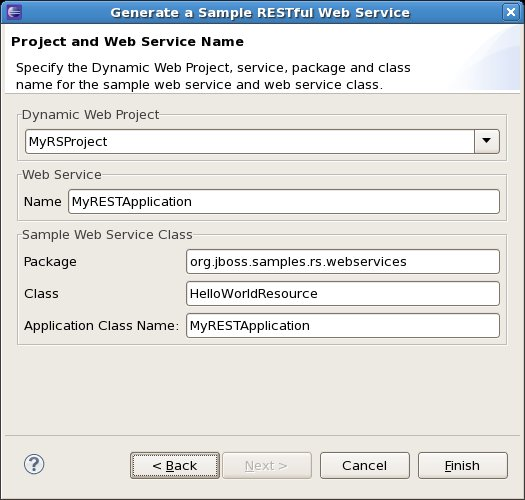

Views |
|
| Web Service Tester Updates |
In M1, we added a new Web Service Tester view to JBoss Tools. Since then, the tester has gone through a facelift. The look and feel is courtesy of the Eclipse Forms toolkit and the usability improvements to the layout will hopefully make it much easier to get around in. Once you've typed or selected your WSDL location in the URL combo, you can select the technology you're invoking the service against. The default is JAX-WS, but you now have the JAX-RS operations built into the list - GET, POST, PUT, DELETE, and OPTIONS. OPTIONS provides a way to ping a JAX-RS service to see what operations it supports. In addition, you now have additional options for your Response data. You can save it to a text file, open it in an editor, view it in raw form (which is the default), or view your results in an embedded web browser. This last option can be very useful when a service returns a web page with an error or warning to view. In addition, we've added a few other bits of new functionality:
|
|
|
|
| New JAX-RS Sample Wizard |
Much like the "Create a Sample Web Service" wizard that was added in JBT 3.1, we've added a new "Create a Sample RESTful Web Service" wizard this release to quickly get you up and running.  |